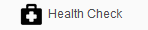
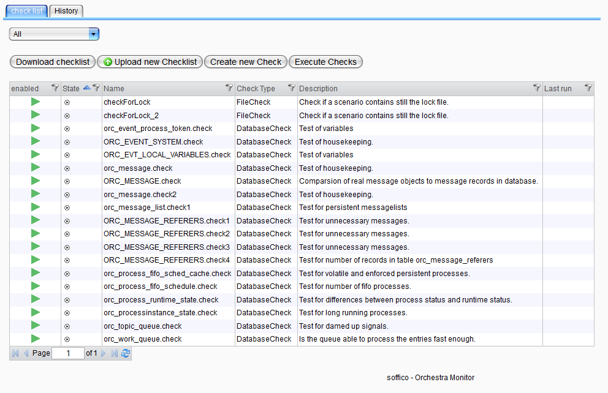
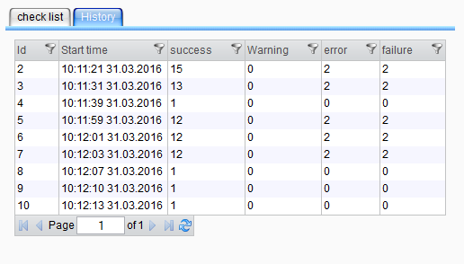

Health Check

Topic content
The health check is a tool to evaluate the state of Orchestra. This means the tool executes test, which should inform about the performance and efficiency of Orchestra.
In contrast to the alerting engine, which checks scenario specific values, is the health check a global tool. Its aim is to inform the user about anomalies, which may appear. Out of support experience some problems appear frequently and can be solved easily by customer. The user should be able with the tools help to fix this problems independent.
|
Attention: The health check will not do any changes in Orchestra. It just recognizes anomalies and gives solution hints. |
The health check executes several "checks":
A check is one test case on the Orchestra system. It refers to one certain part of Orchestra. The result of a check execution is kind of a traffic light state:
Error: Something is going extremely wrong. The system is in danger |
|
Warning: There is a anomaly but it is not jet dangerous. To avoid problems maybe something has to be done. |
|
Success: The check was successful, no anomaly appeared. |
|
Not Executed: The check hasn't been executed yet(since the server is running). |
|
Failure: It appeared a error while executing the check. It could not evaluate a result. |
Out of this states you can see with one sight if your system is running well or if something doesn't work as expected.
To see the health check view click on the health check icon in left hand menu:

This will lead you to the tool's main view:

You can see the panel is divided in checklist view and history view.
Checklist view
The view for checklist has several functions. The checklist is the list of checks you have loaded in this Orchestra node. The view shows you an overview of this checks. The usage of health check is equal to other monitor views.
Functions
•Download checklist: It is possible to download the actual using checklist. With button download a xml file is generated, which contains all checks with its configurations.The xml file can be uploaded again in every monitor.
•Upload new checklist: To get the check configuration in your system you can upload a new checklist. The check configurations get stored persistent in background. In factory state no checks are contained. But you can simply upload a XML. We prevent a template list, which is stored in <your_Orchestra_path>\Orchestra\WEB-INF\classes\config.
•Create new check: Here you can add your own individual checks. Depending on the type of check the configuration elements changes.
|
Checks of type databaseCheck can not be created. To prevent the execution of wrong sql statements it is not possible to change or create statements. |
•Execute check: This function executes all enabled checks in your list.
Table:
The table shows all loaded checks and their most important values in one view:
Active: Every check can be set enabled or disabled, equal to scenario activation. This can be done by double clicking on the active/inactive icon.
Status: The traffic jam result of this check's last execution.
Name: The individual name of the check.
Check Type: The type of check. Every check refers to one part of Orchestra and its surrounding system.
Description: A description of the check, which shortly explains the checks intention.
Last Executed: The Date of last check execution.
For more information double click on the intended check for details.
The history view shows all executions of the last three days. You can see how many have ended up with which state. With double click on one row the execution report is displayed. You can also see the start time of execution and the execution id.
